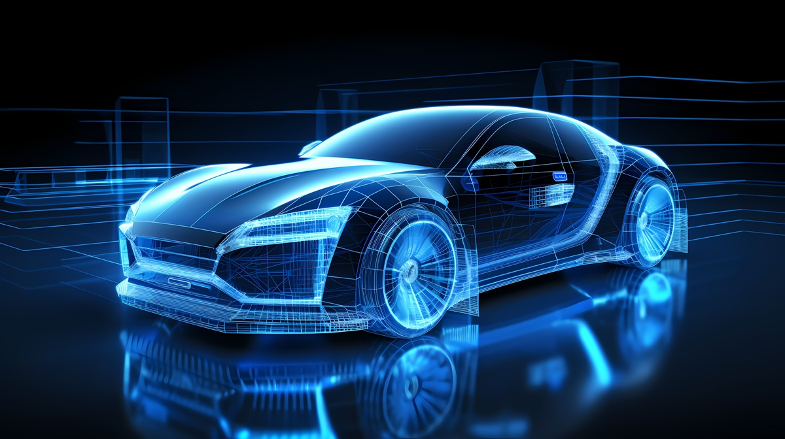

乗用車向けLiDAR市場は目覚ましい急成長を遂げており、2024年の売上高は6億9,200万ドルに達し、2023年から67%という力強い成長を示した。世界のLiDAR出荷量を牽引しているのは、ADASへのLiDAR採用が急増する中国であり、その市場シェアは驚異の92%に上る。Yole Groupの新レポート「Automotive LiDAR 2025」で詳述されている通りだ。
Hesaiは乗用車・ロボタクシー両分野で世界LiDAR市場のトップを維持している。超コンパクトなATXと高性能AT1440を含むHesaiの最先端LiDARソリューションは、高度な運転支援システム（ADAS）と自動運転に不可欠な高解像度3D知覚を提供する。同社は100社を超える自動車OEMとの設計採用実績を持ち、Li Auto、長城汽車、長安汽車、小米（Xiaomi）、BYDなど中国トップ自動車メーカーとの注目すべきパートナーシップを有している。
本インタビューでは、Yole Groupのシニアアナリスト Pierrick Boulay が、Hesai Technology グローバル販売担当シニアバイスプレジデント Bob in den Bosch 氏と対談し、LiDAR業界のイノベーションを推進し未来を形成する同社の役割について掘り下げた。
Hesaiのグローバル販売担当シニアバイスプレジデントを務める Bob in den Bosch です。この役割では、同社の自動車ビジネスを率い、新産業分野への展開を推進しています。
2024年の自動車市場は、中国OEMに牽引され、2023年比で2倍以上に成長しました。かつてLiDARメーカーは西側サプライヤーに大きく依存していましたが、今や中国サプライヤーのシェアが劇的に拡大しています。
中国でのLiDAR市場の急成長は、いくつかの重要な要因が組み合わさっています。
その結果、2024年の2万ドル価格帯のNEV販売台数は549万台に達し、そのうち136万台にLiDARが搭載された。この市場でのLiDAR普及率は25%に達しており、中〜高価格帯NEV市場でのLiDAR採用は「キャズムを超え」、大量普及段階に入りつつある。
2025年も以下の要因による力強い成長が続くと見ています。
2025年の出荷台数は2〜3倍増加し、120万〜150万台のLiDARに達すると見込んでいる。市場全体が約300万台と予測されることを考えると、Hesaiは市場シェアのほぼ半分を占めることになる。ADASとロボカー両市場で2025年もNo.1のシェアを維持すると予測している。
まさにその通り、市場は二方向に進化しています。
Hesaiは最近、L2・L3・L4自動運転システム向けの画期的なソリューション「Infinity Eye」と、次世代の自動車グレード3種のLiDAR製品を発表した。ETX超長距離LiDAR、AT1440超高精細LiDAR、FTX完全ソリッドステート死角LiDARがそれにあたる。
HesaiはEPFL発のSPAD技術のパイオニアであるスイスのFastree3Dを戦略的に買収し、独自の第4世代プラットフォームにSPADコア特許技術を深く組み込んでいます。このプラットフォームは2025年に量産に入る予定です。先進的な光子センシングと信号処理を高効率モジュールに統合することで、より高い点群密度をより低消費電力で実現し、LiDARセンサーの生産と大規模供給の方法を革新します。
独自の高度な点群処理エンジン（IPE）はナノ秒精度でレーザー反射波形をデコードし、毎秒246億サンプルを処理します。雨・霧・塵・排気などの悪条件でも環境ノイズの99.9%以上をインテリジェントにフィルタリングし、全天候型知覚と高精度を実現します。
HesaiはASIC設計に多大な投資を行っており、以下のメリットをもたらしています。
Hesaiは積極的にグローバル市場へ展開し、地域ごとに戦略を適応させています。
イノベーション速度とコスト効率が鍵となる中国と異なり、欧州・北米市場では規制遵守・信頼性・長期パートナーシップが重視される。
2024年の記録的な業績は、複数の長期戦略的決断が実を結んだ結果です。
第一に、ADASとロボティクス両セクターでの強く成長する需要が大幅な出荷量増加を牽引しました。第二に、独自ASICと垂直統合型LiDARアーキテクチャへの多大な投資により、サイズの縮小・コスト削減・信頼性向上を実現しました。第三に、精密組立から自動テストまでをカバーする社内製造能力が品質とコストの卓越した管理を可能にしています。マックスウェル・グローバルLiDAR R&D製造センターは、業界初の完全統合型R&D・生産ハブとして、迅速な製品反復と信頼性の高い量産を実現しています。2024年には前年比2倍以上の50万台以上のLiDARを出荷することができました。第四に、スケールに伴う強い営業レバレッジが生じています。製品ミックスの最適化と製造効率の向上により粗利益率が改善し、通期で黒字の営業・純キャッシュフローを達成した唯一の上場LiDAR企業という独自の立場を確立しました。
自動車LiDAR以外にも、Hesaiはロボティクスと産業用アプリケーションでも進展を遂げています。ロボティクス分野では、自律配送・物流ロボット・ロボット芝刈り機へのLiDAR採用が増えています。農業や港湾などの産業自動化も当社技術で強化されています。今後もLiDARイノベーションを推進し、高性能でコスト効率の高いソリューションを世界の顧客に届けることに注力していきます。